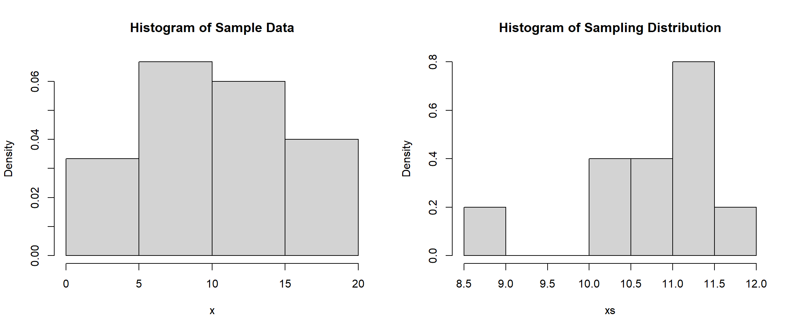
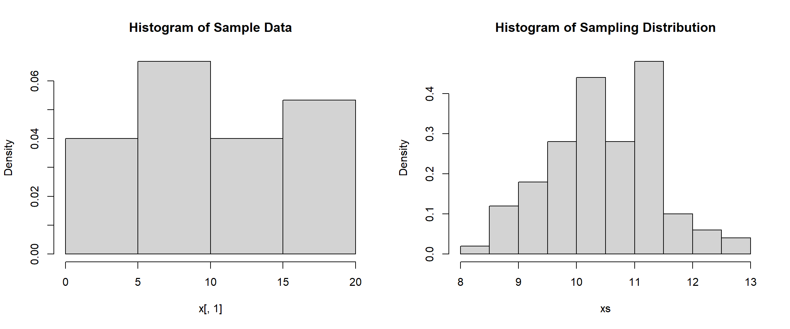
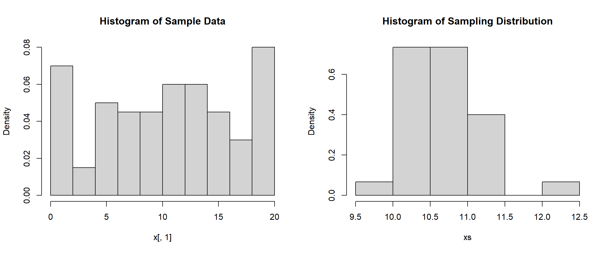
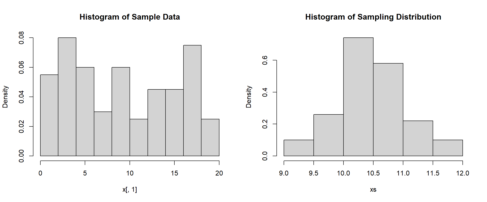
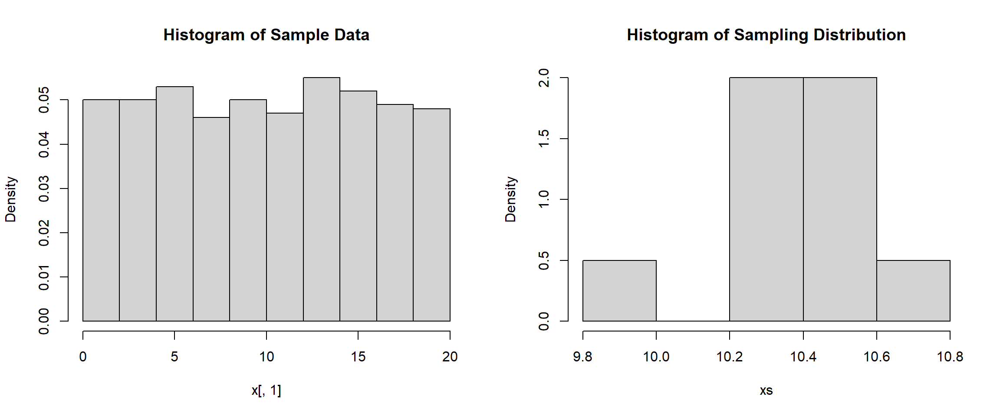
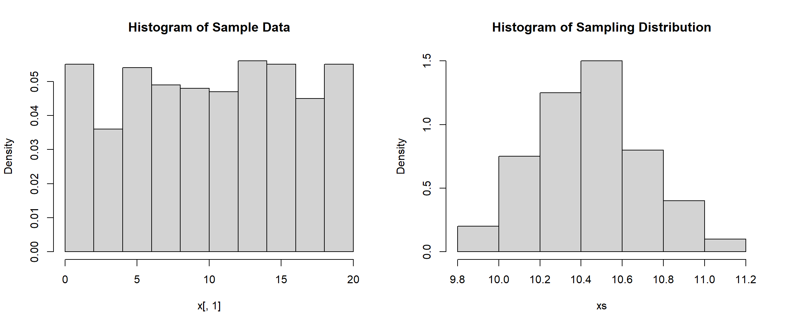
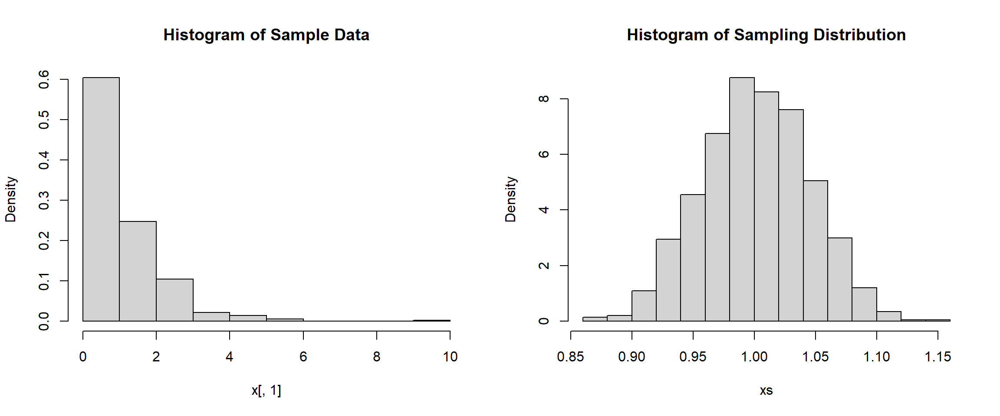

x <- sample(1:20, 30, replace=TRUE)
mean(x)[1] 11.23333sd(x)[1] 5.056122In this section, we will run through some simulations to see the Central Limit Theorem in action. There will be a good amount of code and outputs, but the majority of the code is virtually the same thing. You are encouraged to run through the code yourself and play around with it to see what each piece may do.
In order have have a solid grasp of statistics and data science, one needs to understand probability. We will say that P(event), which is read as “the probability of an event”, tells us the likelihood of an event occurring. For discrete data it might be a specific value and for continuous data it may be a range of values. The probability must always be between 0 and 1, that is \(0\leq P(\text{event})\leq 1\). The closer the value is to 0 the less likely the event is to occur, and the closer to 1 it is the more likely the event is to occur.
If we want to find the average height of people in Maryland then to get the exact answer we would have to measure every person in the state. But, since it is not feasible to do (since there are over 6 million people!) we may just select 100 people and ask them. Now we should mention that the groups have specific names. The population is the entire collection of things being studied, in our example, this is everyone in the state of Maryland. The sample is the subset of our population that we can get our data from, which for us is the 100 people that we were able to ask.
This idea of the population and sample is also sometimes expanded to possible values for measured observations and the actual values being measured. For instance, the population could be the number of people walking into the library could be any integer number between 0 and infinity, but the sample would be the actual observed values. Another thing worth mentioning is the idea of a random variable. This is the value of an observation determined by chance event.
We have seen the idea of the Law of Large Numbers in previous sections, but it is worth mentioning again. This idea states that when we have relatively few observations the relative frequency of the outcomes may not necessarily look like the population distribution. But, as the sample gets larger and larger then the relative frequency of outcomes will converge on the probability of outcomes from the population distribution. This is an important idea we will see later in this section as we cannot “guess” what the distribution will be if we just have 10 or 30 values, but if we increase the number of values then it will look more like our population distribution.
Now when we look at data we can characterize it by its mean and standard deviation. We will use different notations depending on whether we are discussing the population mean and standard deviation or the sample mean and standard deviation. The population mean will be written as \(\mu\) (pronounced “mu”) and the population standard deviation will be written as \(\sigma\) (pronounced “sigma”). Unfortunately, we rarely know these population parameters and thus need to obtain a sample to estimate what the population parameters are. The sample mean will be written as \(\bar{x}\) (pronounced “x-bar”) and the sample standard deviation will be written as \(s\).
What we want to do now is generate random samples from a uniform discrete distribution and then take the mean of the samples. So, we will generate 30 random values between the numbers 1 and 20 and then we will take the mean and record it.
x <- sample(1:20, 30, replace=TRUE)
mean(x)[1] 11.23333sd(x)[1] 5.056122If you were to repeat the process over and over again then you may get different values for each time you run it. Notice how the sample data is discrete, but the mean is continuous. We can also notice that the histogram does not particularly look like a uniform distribution like we would expect since there are so few values.
Now, if you were to repeat this process for a total of 10 times and record each mean then you may see something similar to the code below. We will save this in the variable ‘xs’ which will indicate the sampling distribution. This is a sampling of the population mean.
xs <- c(11.23333, 10.5, 11.46667, 10.56667, 11.5, 10.6,
10.46667, 8.533333, 11.3, 11.96667)
mean(xs)[1] 10.81333sd(xs)[1] 0.9524761It is important to differentiate the sample data distribution and the sampling distribution (which represents the sample mean and is calculated from different samples). In our example the sample data are the actual values in the sample coming from a uniform discrete distribution and the sampling distribution is the mean of each sample. We can visualize both distributions below, and pay attention to the ranges of both graphics.
hist(x, main="Histogram of Sample Data", freq=FALSE)
hist(xs, main="Histogram of Sampling Distribution", freq=FALSE)
Neither of these visualizations look like any distribution that we know; and this is due to the Law of Large numbers, as we only have 30 pieces of data in the sample and only 10 pieces of data in the sampling distribution. We can increase the number of samples we record the mean for if we want. Let’s see what happens when we record the mean for 100 samples that have a sample size of 30. To do this, we will use the matrix() function which will place our random samples in a matrix of 30 rows. We will also utilize the apply() function to find the mean of each column (the 2 indicates finding the mean of the columns, a 1 would indicate the mean of the rows).
x <- matrix(sample(1:20, 3000, replace=TRUE), nrow = 30)
dim(x) # Showing we have a sample size of 30 for 100 different samples[1] 30 100xs <- apply(x, 2, mean)
mean(xs)[1] 10.512sd(xs)[1] 0.9701669hist(x[,1], main="Histogram of Sample Data", freq=FALSE)
hist(xs, main="Histogram of Sampling Distribution", freq=FALSE)
When looking at the results above, it is still difficult to figure out what distribution the sample data comes from. Even though we know that it follows a uniform distribution, most of the time we are just given the data with no knowledge of what distribution it came from. It is obvious to us though that the sampling distribution is starting to take shape since we now have 100 values in it. We might be able to see a normal distribution starting to form. We can also notice that the mean is roughly the same as the mean of our sample that we found at the very beginning (10.2), but the standard deviation is much smaller than the standard deviation of the sample (6.5).
We can repeat this process, but instead of having a sample size of 30 we can see what happens when we increase the sample size to 100:
x <- sample(1:20, 100, replace=TRUE)
mean(x)[1] 10.17sd(x)[1] 6.025292The sample data should look much more like a uniform distribution (thanks to the Law of Large Numbers). We can see the sampling distribution again when we take 30 samples with a sample size of 100 and 100 samples with a sample size of 100. When you look at the following simulations, pay attention to how the standard deviation changes as well as how the range changes for the sampling distribution.
x <- matrix(sample(1:20, 3000, replace=TRUE), nrow = 100)
xs <- apply(x, 2, mean)
mean(xs)[1] 10.70167sd(xs)[1] 0.4910375hist(x[,1], main="Histogram of Sample Data", freq=FALSE)
hist(xs, main="Histogram of Sampling Distribution", freq=FALSE)
x <- matrix(sample(1:20, 10000, replace=TRUE), nrow = 100)
xs <- apply(x, 2, mean)
mean(xs)[1] 10.4644sd(xs)[1] 0.5447329hist(x[,1], main="Histogram of Sample Data", freq=FALSE)
hist(xs, main="Histogram of Sampling Distribution", freq=FALSE)
We can notice that the standard deviation is that the only statistic that really changes each time is the standard deviation. It appears that the mean of the sample and the mean of the sampling distribution remain the same but the standard deviation decreases as the sample size gets larger. We can see the same thing below as we increase the sample size to 500.
x <- sample(1:20, 500, replace=TRUE)
mean(x)[1] 10.514sd(x)[1] 5.858878x <- matrix(sample(1:20, 500*10, replace=TRUE), nrow = 500)
xs <- apply(x, 2, mean)
mean(xs)[1] 10.3958sd(xs)[1] 0.2366215hist(x[,1], main="Histogram of Sample Data", freq=FALSE)
hist(xs, main="Histogram of Sampling Distribution", freq=FALSE)
x <- matrix(sample(1:20, 500*100, replace=TRUE), nrow = 500)
xs <- apply(x, 2, mean)
mean(xs)[1] 10.43638sd(xs)[1] 0.2540353hist(x[,1], main="Histogram of Sample Data", freq=FALSE)
hist(xs, main="Histogram of Sampling Distribution", freq=FALSE)
After seeing all of the simulations, we are ready to discuss the results. We know since we are dealing with a uniform distribution that the population mean is \(\displaystyle \mu=\frac{1+20}{2}=10.5\) and the population standard deviation is \(\displaystyle \sigma = \frac{20-1}{\sqrt{12}}= 5.48\). We can see that our samples tend to have these results, as the simulation with a sample size of 500 shows a mean of 10.41 and a standard deviation of 5.78. But, if you run it again you might get slightly different results.
Through all of the simulations, we can see that the mean of the sampling distribution is the same as the mean of the population distribution. With this, we could say that \(E(\bar{X})=\mu_X\). We can also see that the standard deviation changes as the sample size gets larger. In fact, we can say that \(\displaystyle SD(\bar{X})=\frac{\sigma}{\sqrt{n}}\). We can also see that as the sample size increases, the values cluster more around the mean and we have less variability.
In fact, this is what the Central Limit Theorem tells us the distribution of sampling means approximates a normal distribution as the sample size becomes larger, regardless of the shape of the population distribution. It also tells us the mean stays the same while the standard deviation changes based on the size of the sample. This is an important idea as it shows us that if we have a sample of at least 30, then no matter what distribution it comes from, the mean of the sample will follow a normal distribution. This is important in statistics and data science as the normal distribution is the gold standard which has very nice properties and is easy to do analysis with.
The Central Limit Theorem even works with highly skewed data. Below is an example of the gamma distribution. The sample data will be extremely skewed right, but the sampling distribution of means will exhibit a normal distribution.
x <- matrix(rgamma(500*1000, 1, 1), nrow = 500)
xs <- apply(x, 2, mean)
mean(xs)[1] 1.001284sd(xs)[1] 0.04373685hist(x[,1], main="Histogram of Sample Data", freq=FALSE)
hist(xs, main="Histogram of Sampling Distribution", freq=FALSE)
You might be wondering why it matters still. Well, the Central Limit Theorem essentially tells us that with a large \(n\), the sampling distribution of \(\bar{X}\) is normally distributed as \(\displaystyle N(\mu, \frac{\sigma}{\sqrt{n}})\). This will allow us to find probabilities easier since \(\displaystyle P\left( \frac{\bar{X}-\mu}{\sigma/\sqrt{n}}\right) \leq b\) is \(\displaystyle P(z\leq b)\). We will also see in future lessons that this makes finding confidence intervals easier as well, whether the population standard deviations are known or unknown.